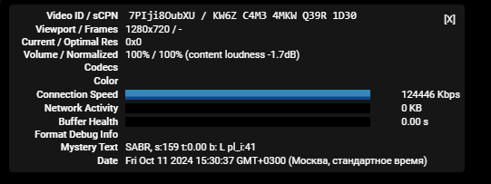

Где взять настройки МГТС Москва для youtube, неважно goodbyedpi или zapret, byedpi 10.10
zapret_only_DS_X.zip (1,1 МБ)
Попробуй этот билд, собирал его из разных кусочков. Запускай через preset_russia2.cmd
Отпишись есть ли результат.
Забыл добавить что QUIC обязательно нужно в дефолт поставить. Kyber выключен.

Нет, 4k - сдыхает
Пробуй так
–dpi-desync=fake,split2 --dpi-desync-ttl=8 --dpi-desync-repeats=10 --dpi-desync-fake-tls=0x00000000 --dpi-desync-split-seqovl=1 --dpi-desync-fooling=badsum
это что? Zapret или GoodbyeDPI
в файле config у zapret выставляется

Значит мгтс немного по другому, я помню были другие параметры дурения на мгтс тоже подходили
запрет
start "zapret: https" /min "%~dp0winws.exe" ^
--wf-tcp=443 ^
--filter-tcp=443 --dpi-desync=split2 --dpi-desync-split-seqovl=1 --dpi-desync-ttl=2 --wssize 1:6
при этом ttl надо подбирать вручную от 1 до 6
если заработает, то нужно также вручную дописать хостлист с текстовым файлом с доменами для ютуба
и еще в браузере должен быть выключен quic
Господа бедолаги с МГТС (Москва), понимаю вас. Перепробовал все способы, гудбай чек показывал максимум 3 из 9 и все не работало. Если кто найдет решение, отпишите плз.
пробовал как-то конфиги с этого форума, ничего не помогало. В итоге запускал blockcheck из запрета, и проверял им адреса googlevideo, ntc.party, и rutracker.org заодно. Плюс отключил ipv6, quic, и kyber. В итоге блокчек выдал несколько стратегий, из которых можно было слепить что-то работающее.
Попробуйте так. То есть отключить ipv6, quic, kyber, и потом блокчеком пройтись по адресу(ам) googlevideo, ntc.party, rutracker.org. И из списка стратегий слепить что-то универсальное.
upd: вот это еще чекните Сборка YTDisBystro на основе Zapret: Тестирование и обсуждение - #83 by Darth_Neko
Тогда уж нужно и ссылку дать на блокчек из запрета) Не все о нем знают
Ох, спасибо тебе большое человеческий брат. С 10 числа для МГТС не мог ничего рабочего найти, твоя сборка помогла.
Не за что. Я в итоге пришел к сборке zapret + прокси через byedpi с ключем - -s1 -o1 -Ar -o1 -At - f-1 -r1+s -As. В такой конфигурации работает вообще всё.
Хм, а разве Zapret не умеет работать со включенным QUIC, или я что-то путаю?  (по крайней мере у меня с ним работает…)
(по крайней мере у меня с ним работает…)
Ты что, святой? последние 4 дня страдал и рыдал, Москва МГТС, сработало. Спасибо!
Гудбай не умеет, а Запрет прекрасно работает с включенными в браузере quic и kyber.
Вот-вот, и я о том же, с Zapret’ом тот же YouTube хорошо работает (а с GoodByeDPI ни-ни). Вроде как ByeDPI тоже дружит с QUIC (точно не знаю), т.к. у меня на телефоне и ПК с ним тоже всё работает.
для гудбая подобрал такие настройки, пока полёт нормальный, ролики открываются быстро и в высоком качестве
-f 2 -e 1 --fake-from-hex 1603030135010001310303424143facf5c983ac8ff20b819cfd634cbf5143c0005b2b8b142a6cd335012c220008969b6b387683dedb4114d466ca90be3212b2bde0c4f56261a9801 -q --reverse-frag --set-ttl 3 --fake-gen 15